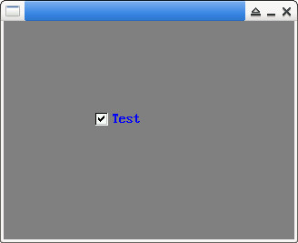

參考資訊：
https://github.com/piyushpandey013/ucGUI
https://github.com/yongzhena/ucgui-linux
main.c
#include "GUI.h"
#include "CHECKBOX.h"
int main(int argc, char *argv[])
{
CHECKBOX_Handle hChk = 0;
GUI_Init();
GUI_SetBkColor(GUI_GRAY);
GUI_Clear();
hChk = CHECKBOX_Create(100, 100, 100, 16, 0, 100, CHECKBOX_BI_ACTIV_3STATE);
CHECKBOX_SetText(hChk, "Test");
CHECKBOX_SetFont(hChk, &GUI_Font8x16);
CHECKBOX_SetTextColor(hChk, GUI_BLUE);
CHECKBOX_SetState(hChk, 1);
GUI_Delay(3000);
return 0;
}
編譯、執行
$ gcc main.c -o main libucgui.a -IGUI_X -IGUI/Core -IGUI/Widget -IGUI/WM -lSDL $ ./main
